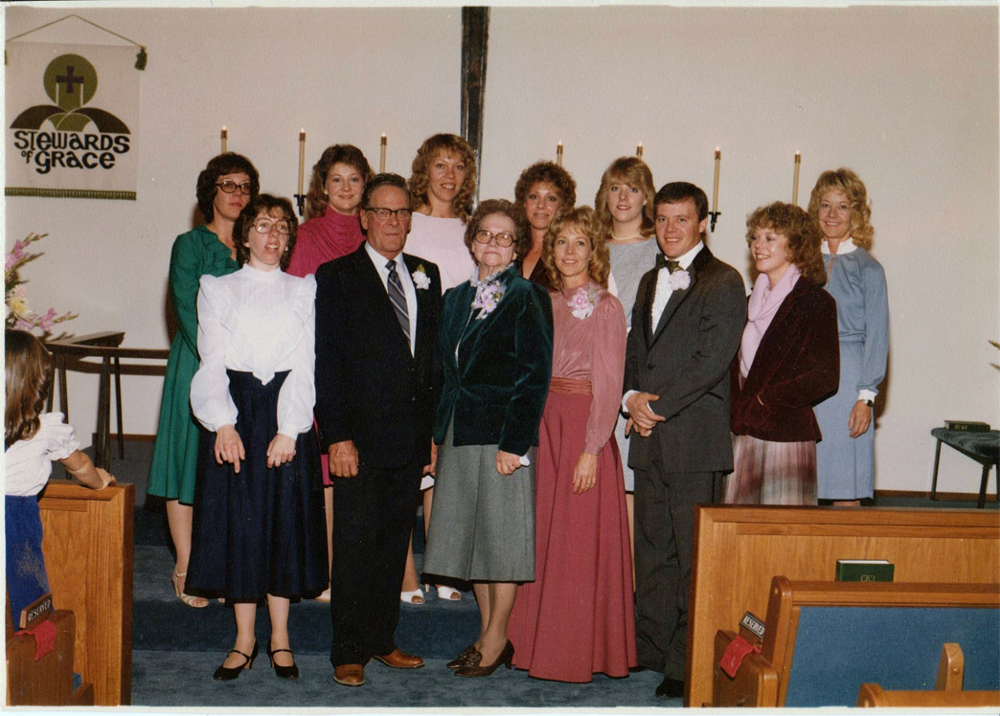

|
Bert Roper and
Nellie Jacobson |
----> |
 |
Thurman Roper
Born 3 Aug 1918 Oak City,Millard,UT
Died 14 Jan. 1995 Powell, Park, WY
Zona Elizabeth Hopkin
Born 5 May 1919 Penrose, Wyoming
Died 5 Oct. 2011 Powell, Park, WY
Married 21 June 1940 Oak City, Millard, UT
|
 |
|
Children:
1. Donna Roper
2. Diane Roper
3. Dorothy Roper
4. Zona Gayle Roper
5. Elizabeth Nell "Libby" Roper
6. Mary Roper
7. Rhonda Roper
8. Bert Roper
9. Shelly Roper
10. Christie Roper
Family Pictures

Thurman Woodrow Roper family in 1983:
Front row: Rhonda, Thurman, Zona, Diane, Bert, Chrisite
Back row: Dorthy, Mary, Libby, Gayle, Shelly, Donna (Donna is in the blue dress farthest right in the picture)
Other family pictures:
Young Zona Elizabeth Hopkin
Thurman Roper Family 1999 (without Thurman, who passed away in 1995)
Front row: Donna, Rhonda, Zona, Mary
Back row: Shelly, Diane, Libby, Dorthy, Bert, Gayle, Christie
Thurman Roper Family 1990 (only the children)
Front row: Rhonda, Donna, Dorthy, Gayle, Christie
Back row: Mary, Shelly, Bert, Libby, Diane
Thurman Roper Family 1973
Front row: Rhonda, Zona, Thurman, Mary
Middle row: Christie, Bert
Back row: Dorthy, Donna, Gayle, Libby, Shelly, Diane
Thurman Roper Family about 1963 (black/white)
Front row: Bert, Shelly (on Zona's lap), Zona, Rhonda, Thuman, Christie (on Thurman's lap), Mary
Back row: Dorthy, Libby, Diane, Donna, Gayle
|

{kind=link}
{kind=link}
{kind=link}
{kind=link}
{kind=link}